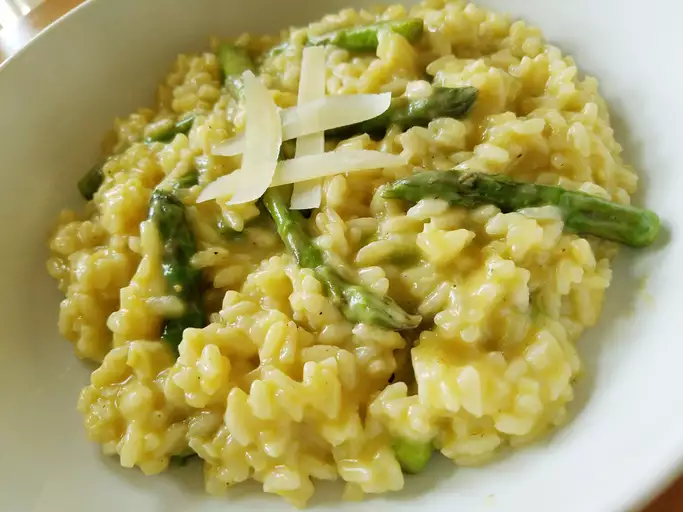

Asparagus Risotto

Description
This creamy asparagus risotto is flavored with garlic and white wine, and finished with Parmesan cheese, lemon juice, and lemon zest for a bright flavor.
Ingredients
To make this delicious risotto, you'll need the following ingredients:
- Vegetables: You’ll need an onion, celery, and asparagus.
- Broth: Use store-bought or homemade chicken broth.
- Oil: Cook the onion and celery in oil until they’re tender.
- Seasonings: Season the asparagus risotto with salt, pepper, and fresh garlic.
- Rice: Arborio rice is perfect for making risotto.
- Wine: Opt for a dry white wine, such as Chardonnay or sauvignon blanc.
- Cheese: Parmesan cheese lends richness and creamy flavor.
- Lemon: You’ll need lemon juice and lemon zest for this flavorful risotto.
Steps
Here's a brief overview of the steps to make this creamy asparagus risotto:
- Steam the asparagus and cut into pieces.
- Cook the onion and celery until tender, season, and add garlic and rice.
- Cook and stir until rice is lightly toasted.
- Add the liquids gradually according to the detailed recipe below.
- Stir in the asparagus.
- Remove from heat and mix in cheese, juice, and zest.
Home